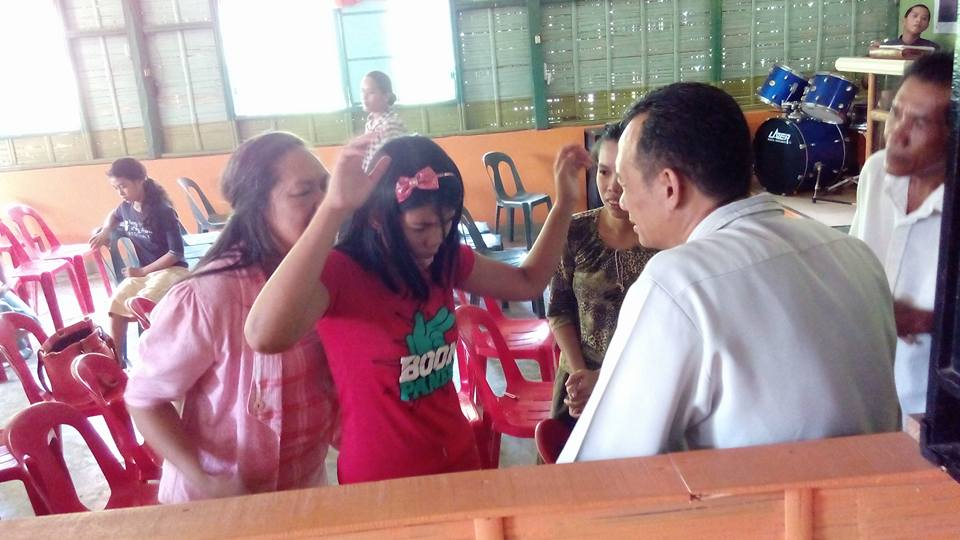
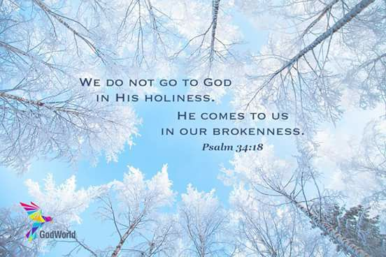
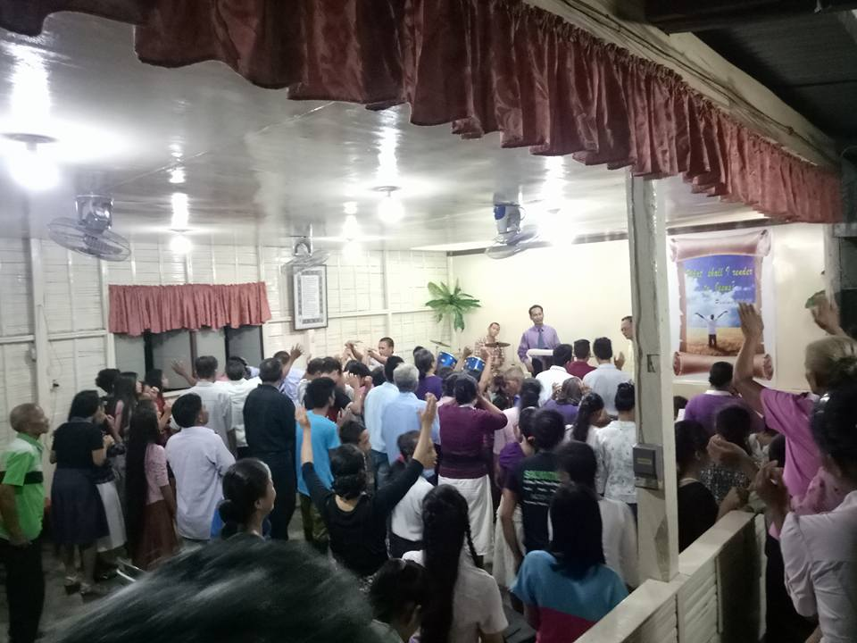
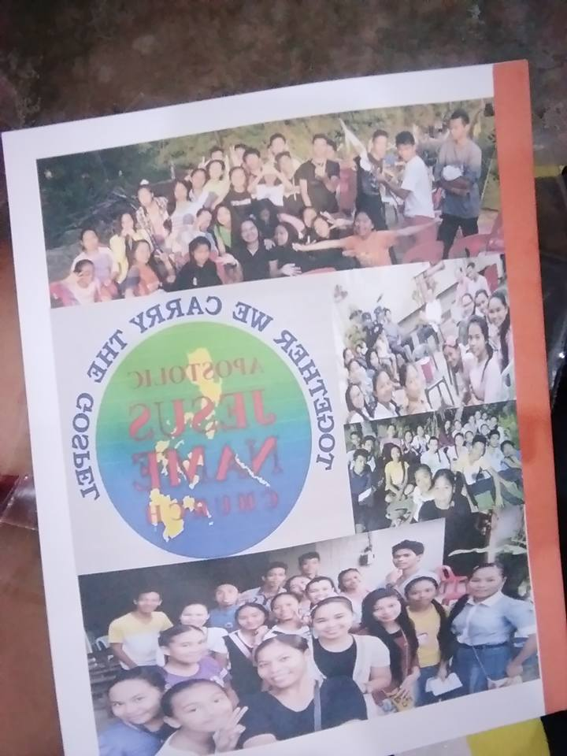
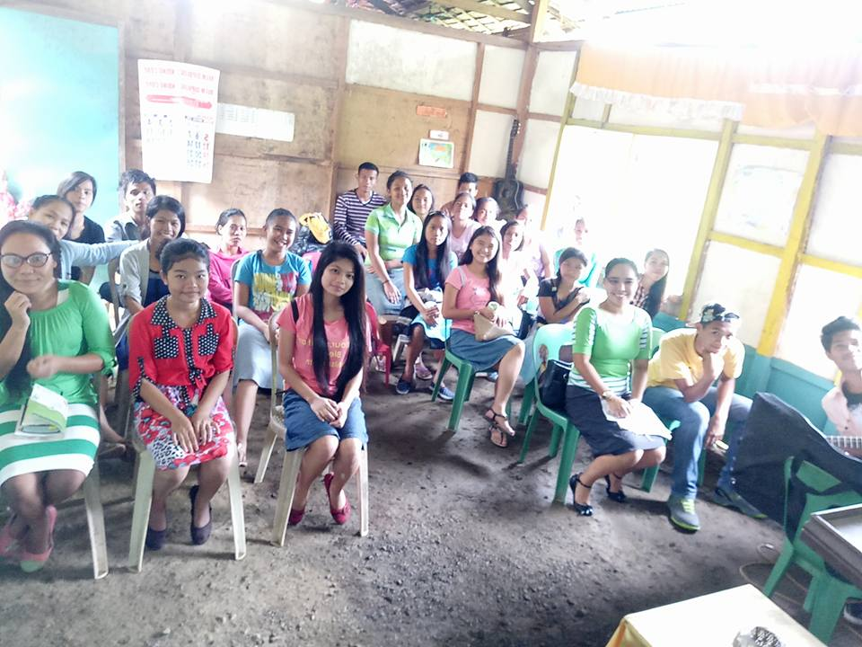

APOSTOLIC JESUS NAME CHURCH

Goals/Missions:
1.)To create an assembly to the remote area in which we can hold bible study and reaching out people.
2.)We can establish a church full of love and care to others specially to those who are lost.
3.)We can make a group that will spread the gospel of Jesus Christ into the mountainous area.
4.)To make a home church full of warm love and care inspired by the spirit of Jesus Christ.
5.)Provide assistance to the very poor adult brethren so that they can serve the lord.



Vision:
"To create healthy brethren inspired by the Holy Spirit and their love to Jesus Christ,and a church in which people who will come can feel at home and the congregation embrace then faithfully so thatwe will grow both in numbers and spiritual maturity as Apostolic Christian ."


Projects:
1.)Provide financial assistance to our outreach by building small assembly houses.
2.)Improve our music instruments and conduct Seminar,lectures and training to our Worship team.
3.)Finance assistance to the less fortunate Apostolic Christian students.
4.)improve our church.
5.)Build sport pacilities for family gatherings.

Theme:
"THE TIME IS RUNNING OUT"